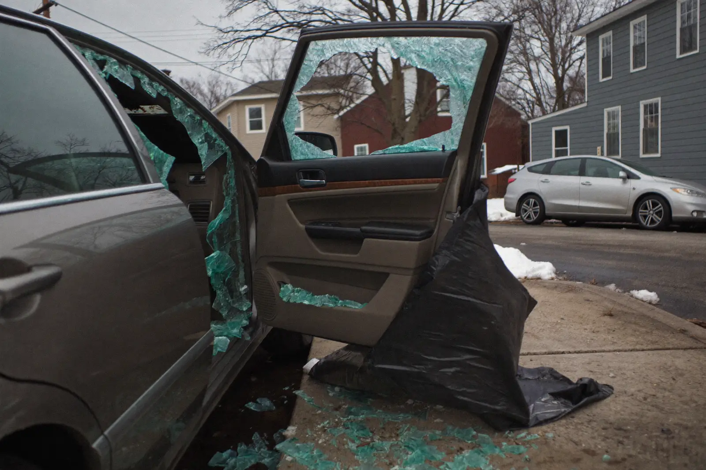

A broken door window leaves your car open to the weather and to anyone walking past. We can usually get it sealed the same day and the glass replaced right after.
Tell us the vehicle and what happened. We reply with a real number — recalibration included, no second invoice.
Prefer to talk? Call (351) 900-7501 — fastest way to get an answer.

Side and rear window replacement in Haverhill covers every piece of glass on your vehicle except the windshield — door windows, quarter glass, and the rear window. This glass is tempered, so it cannot be repaired: when it fails it goes all at once. We replace it at your address and, just as importantly, we get every fragment out of the car.
More than dropping new glass into the opening. The interior door panel and vapour barrier come off first so we can reach the regulator — the mechanism that raises and lowers the window — and check that it was not damaged when the glass went.
Then comes the cleanup, which is the part that separates a proper job from a quick one. Tempered glass breaks into thousands of small cubes and they fall straight down into the bottom of the door cavity, into seat rails, and under carpet. We vacuum the cavity out completely.
New glass is fitted into the regulator clamps, aligned so it seats squarely in the seal, and tested up and down through its full travel before the door panel goes back on.
There is no grey area with tempered glass. It is either intact or it is gone, so any break means replacement.
The common causes here are a break‑in, a stray ball or stone from a mower, a door slammed hard on a frozen seal, a rear hatch closed on cargo, and collision damage. Winter adds one more: glass already stressed by a previous impact can let go on its own during a hard freeze.
Two reasons not to wait. An open window opening lets rain and snow into upholstery and door electronics, and a car that is visibly open is the one that gets looked at again on the next street. If you cannot get it replaced immediately, get it covered properly — taped plastic is a stopgap for hours, not weeks.
Because it is built to. Side and rear windows are tempered: the glass is heated and then cooled rapidly, which locks the surface in compression and the core in tension.
That makes the panel far stronger than ordinary glass against everyday knocks. But once something penetrates the compressed surface layer, all that stored tension releases at once and the entire panel fragments instantly into small blunt cubes.
This is deliberate safety engineering. Tempered glass is used where you might need to get out through it, and blunt cubes are far less dangerous in a collision than large shards. It is also why a side window sometimes appears to explode with no obvious cause — damage from an earlier impact finally works through the surface layer days or weeks later.
Your windshield is different: laminated, with a plastic interlayer that holds it together, which is why it cracks rather than shatters and why chip repair is possible there and not here.
| Factor | Effect on price |
|---|---|
| Front or rear door glass | $200–$450 for most common vehicles |
| Rear window with defroster grid | Higher — heating elements and antenna connections add cost |
| Quarter glass | Often bonded rather than clamped, so more labour |
| Privacy tint or acoustic glass | Adds to the glass price on many newer vehicles |
| Regulator damage | Extra if the mechanism was harmed when the glass went |
| Interior cleanup | Included in our work — confirm it is included elsewhere |
As with windshields, Boston‑area labour rates run above national averages, so national calculators tend to quote Haverhill low. Break‑in damage is usually a comprehensive claim, and it is worth weighing the repair cost against your deductible before filing.
If your window went overnight, the immediate priority is keeping the interior dry and the car unattractive to a second visit. A proper weather seal — heavy plastic film cut to the opening and taped to clean, dry paint — will hold for a few days.
What it will not do is protect the door mechanism or your upholstery for long. Plastic drums badly at speed, it fails in wind, and adhesive left on paint through a cold snap can lift clear coat when it finally comes off.
Treat the cover as a bridge to the appointment, not an alternative to it. In most cases we can get proper glass in within a day or two anywhere in Haverhill or Bradford, so the stopgap only needs to last one night.
No. Side and rear windows are tempered glass, and resin repair only works on laminated glass like a windshield. Tempered glass has no interlayer to hold a repair against, and once the surface is broken the whole panel has already fragmented. Replacement is the only option for side and rear glass in Haverhill.
Usually 60 to 90 minutes per window, most of which is removing and refitting the door panel and vacuuming out the glass fragments. There is no adhesive cure time on clamped door glass, so you can drive as soon as we are finished. Bonded quarter glass and rear windows are the exception and do need setting time.
That is a core part of the job. We vacuum the door cavity, the seat rails, the carpet, and the door pockets, because tempered glass cubes travel much further inside a car than people expect. Fragments left in the door will rattle over bumps and can eventually jam the window regulator, which is a far bigger repair than the glass itself.
Call us as early as you can and we will do our best to get to you the same day anywhere in Haverhill, Bradford, or the neighbouring towns. If the exact glass for your vehicle has to be ordered in, we will fit a proper weather cover on the first visit so the interior stays dry and the car is not sitting open. File your police report before we replace the glass if you are claiming on insurance.
A missing or broken side window is a safety defect and an inspector can fail the vehicle for it, quite apart from the visibility problem it creates for you. Massachusetts inspection rules also restrict aftermarket tinting and anything that obstructs the driver’s view, so replacement glass needs to match the original specification. We fit glass to the correct factory tint level so the car passes.
Tell us the year, make, model, and which window went. If we cannot get the glass today, we will get a proper weather seal on it today.
Call (351) 900-7501 Now